| Domain | Question |
|---|---|
| Time | How does the past predict the future? |
| Frequency | What structure generated this process? |
Time Series Data
Two Lenses, One Reality
EDA for Machine Learning
The Nature of Time Series
Understanding and Prediction
Throughout this book we have seen that understanding and decision support are intertwined.
Time series analysis makes this especially vivid.
These are not competing approaches—they are dual perspectives on the same underlying reality, connected by mathematics.
Time Series Have Memory
Standard assumption in statistics: Observations are independent
Time series reality: Successive observations are dependent
This dependence is not merely a technical nuisance. It is information:
- Information about how the system evolves
- Information about underlying periodic structure
- Information we must understand to make correct inferences
Two Equivalent Descriptions
The dependence structure of a stationary time series has two equivalent descriptions:
| Domain | Object | Question |
|---|---|---|
| Time | Autocorrelation function \(\rho(u)\) | How does \(X(t)\) correlate with \(X(t-u)\)? |
| Frequency | Spectral density \(f(\lambda)\) | How much variance comes from frequency \(\lambda\)? |
These contain the same information—they are Fourier transform pairs.
Understanding both illuminates what either alone obscures.
Why Fourier Analysis Is Fundamental
This is not historical accident. There is a deep reason.
The back-shift operator \(\mathcal{B}\) shifts a process in time:
\[[\mathcal{B}X](t) = X(t-1)\]
Complex exponentials \(e_\lambda(t) = e^{i\lambda t}\) are eigenfunctions of \(\mathcal{B}\):
\[\mathcal{B}(e_\lambda) = e^{-i\lambda} \cdot e_\lambda\]
Sinusoids are the natural “modes” of any time-invariant linear system.
The Creation Myth
One way to think about stationary processes:
In the beginning: White noise—independent observations, no memory
Then: A linear, time-invariant filter acts on the white noise
Result: Autocorrelated output—the filter’s fingerprint
The spectrum tells you what the filter did.
The ACF tells you how the present relates to the past.
Examples: Two Perspectives
Example 1: Sunspots
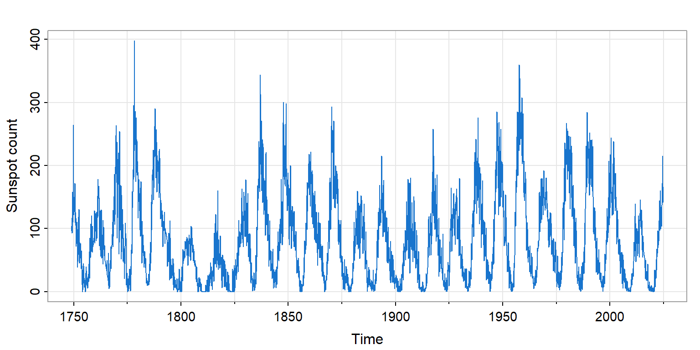Figure 1: Monthly sunspot numbers, 1749–present
- Visible structure: ~11-year solar magnetic cycle
- Irregular amplitude: Peak heights vary substantially
- What do the two lenses reveal?
Sunspots: Time Domain View
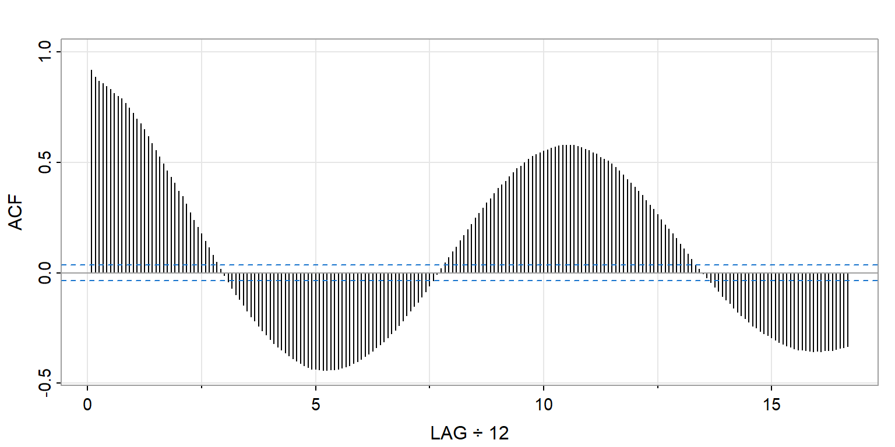Figure 2: ACF of monthly sunspot numbers
- Slow decay: Strong persistence—the past predicts the future
- Oscillation: Cycle of ~11 years
- But cycle length is hard to read precisely
Sunspots: Frequency Domain View
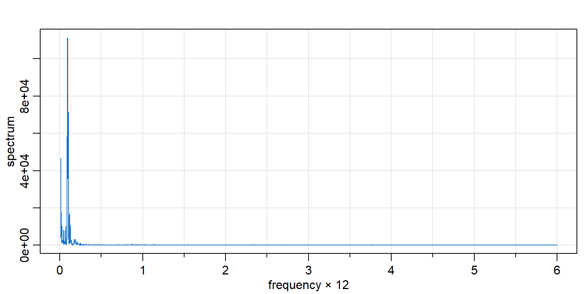Figure 3: Spectrum of monthly sunspot numbers
- Dominant peak: The ~11-year cycle appears as a sharp spectral peak
- Frequency ≈ 0.007 cycles/month → period ≈ 140 months ≈ 11.7 years
- The spectrum makes the periodicity immediately visible
Example 2: Global Temperatures
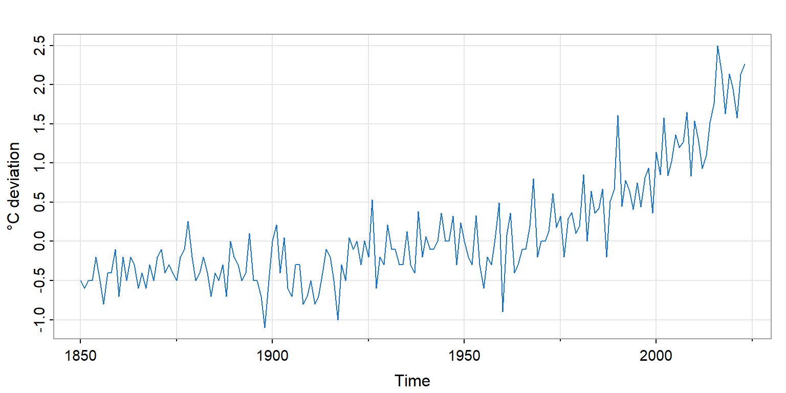Figure 4: Annual temperature deviations from 1991–2020 average
- Dominant feature: Non-linear trend, especially post-1980
- No obvious periodicity: Unlike sunspots
- How do the two lenses handle trend?
Global Temperatures: Time Domain
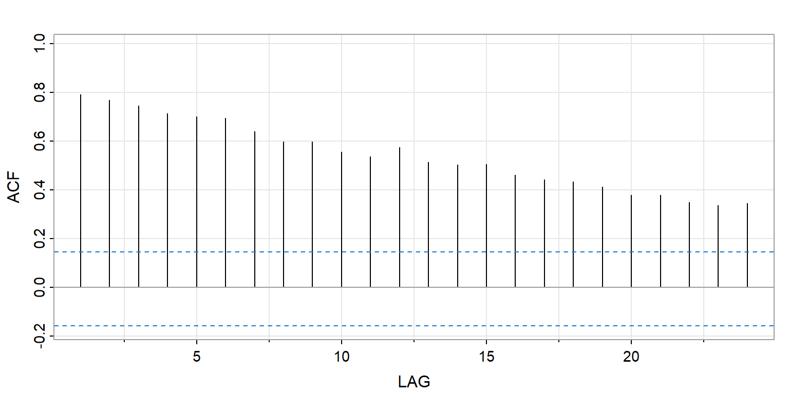Figure 5: ACF of global land temperatures
- Very slow decay: Each year strongly predicts the next
- This signals non-stationarity—the trend dominates
- Must remove trend before standard time series analysis
Global Temperatures: Frequency Domain
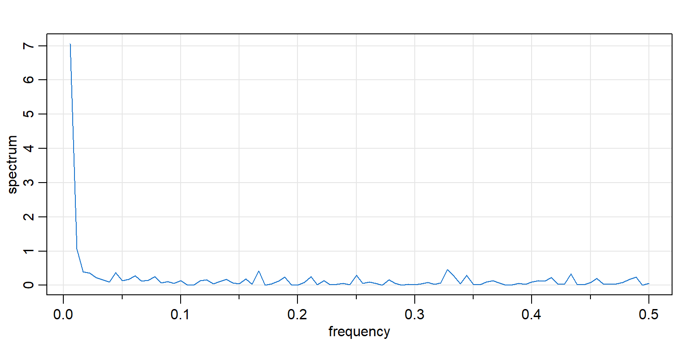Figure 6: Spectrum of global land temperatures
- Low-frequency dominance: Most variance at lowest frequencies
- This is the spectral signature of trend
- No periodic peaks—the story is secular change, not cycles
Example 3: SOI and Fish Recruitment
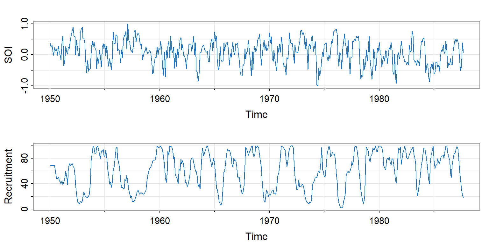Figure 7: Southern Oscillation Index and Recruitment, 1950–1987
- Two related series: Ocean temperature affects fish population
- Multiple periodicities: Annual cycle + El Niño (~4 years)
- Perfect case for spectral analysis
SOI: Dual Perspective
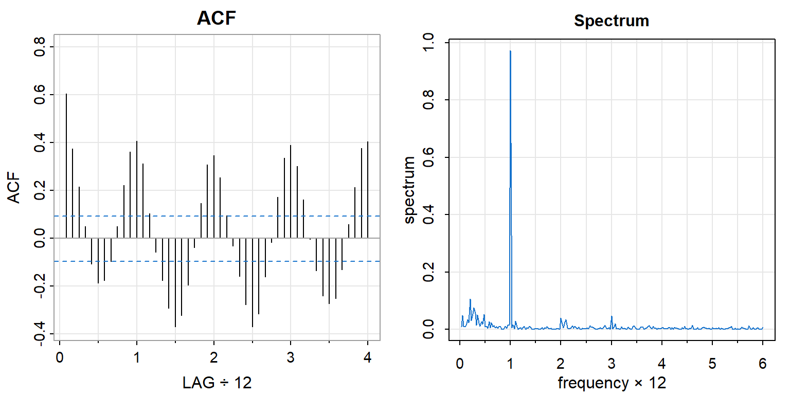Figure 8: SOI: ACF and Spectrum
- ACF: Oscillates, showing cyclical structure, but which cycles?
- Spectrum: Two clear peaks—annual (freq ≈ 1) and El Niño (freq ≈ 0.25)
- The frequency domain separates the periodicities
Recruitment: Dual Perspective
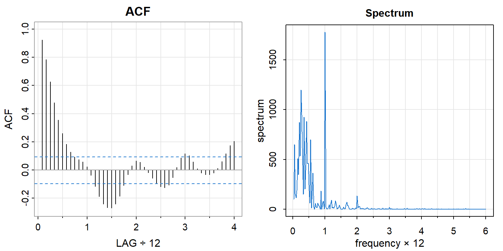Figure 9: Recruitment: ACF and Spectrum
- Similar spectral peaks to SOI—the fish respond to the climate signal
- This correspondence leads to coherence analysis (Chapter 14)
- Understanding the mechanism enables better forecasting
The White Noise Baseline
White Noise: The Blank Slate
White noise is the reference point—a process with no memory:
- Independent observations
- Constant variance
- Zero autocorrelation at all nonzero lags
Time domain: \(\rho(u) = 0\) for all \(u \neq 0\)
Frequency domain: Flat spectrum—equal variance at all frequencies
White Noise: Visual Signature
Bandwidth: 0.072 | Degrees of Freedom: 72.12 | split taper: 0% 
Figure 10: White noise: time series, ACF, and spectrum
- Time series: No visible pattern
- ACF: All lags near zero (within confidence bands)
- Spectrum: Flat (within confidence bands)—no frequency dominates
Departures from White Noise
Any structure in ACF or spectrum reveals departure from independence:
| Observation | Time Domain | Frequency Domain |
|---|---|---|
| Slow ACF decay | Persistence/trend | Low-freq dominance |
| ACF oscillation | Cyclical dependence | Spectral peaks |
| Sharp ACF cutoff | Short memory (MA) | Smooth spectrum |
| Gradual ACF decay | Long memory (AR) | Peaked spectrum |
The two views are complementary diagnostics.
Stationarity and Time-Invariance
Stationarity Defined
A process is second-order stationary (weakly stationary) if:
\(E\{X(t)\} = \mu\) (constant mean)
\(\text{Cov}(X(t+u), X(t)) = \gamma(u)\) (depends only on lag \(u\))
Why it matters:
- Stationarity lets us estimate \(\gamma(u)\) from a single realization
- The spectrum is only defined for stationary processes
- Non-stationary series must be transformed first
Stationarity and Time-Invariance
Stationarity is the statistical counterpart of time-invariance in systems theory.
A linear filter is time-invariant if shifting the input shifts the output by the same amount—the filter doesn’t care what time it is.
Stationary processes are precisely those whose statistical properties don’t care what time it is.
This connection is why Fourier methods—natural for time-invariant systems—are fundamental for stationary processes.
Stationarity: Visual Assessment
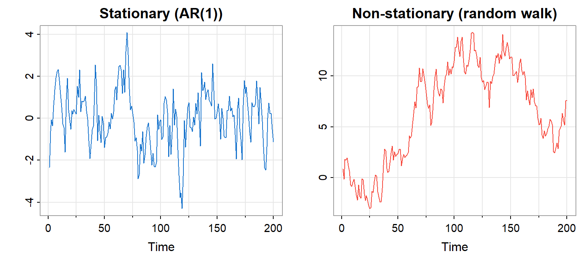Figure 11: Stationary vs. non-stationary
- Left: Fluctuates around a constant level—stationary
- Right: Wanders without returning—non-stationary
Achieving Stationarity
Common transformations for non-stationary data:
| Problem | Transformation |
|---|---|
| Trend in mean | Differencing: \(Y(t) = X(t) - X(t-1)\) |
| Exponential growth | Log transform, then difference |
| Changing variance | Log or Box-Cox transform |
| Seasonality | Seasonal differencing |
After transformation, check that ACF decays and spectrum is not dominated by lowest frequencies.
Autocorrelation in Detail
The Autocorrelation Function
\[\rho_X(u) = \frac{\gamma_X(u)}{\gamma_X(0)} = \text{Corr}(X(t+u), X(t))\]
Properties:
- \(\rho_X(0) = 1\) (perfect self-correlation)
- \(|\rho_X(u)| \leq 1\) (it’s a correlation)
- \(\rho_X(-u) = \rho_X(u)\) (symmetric in lag)
The ACF answers: How predictable is the future from the past?
Sample ACF
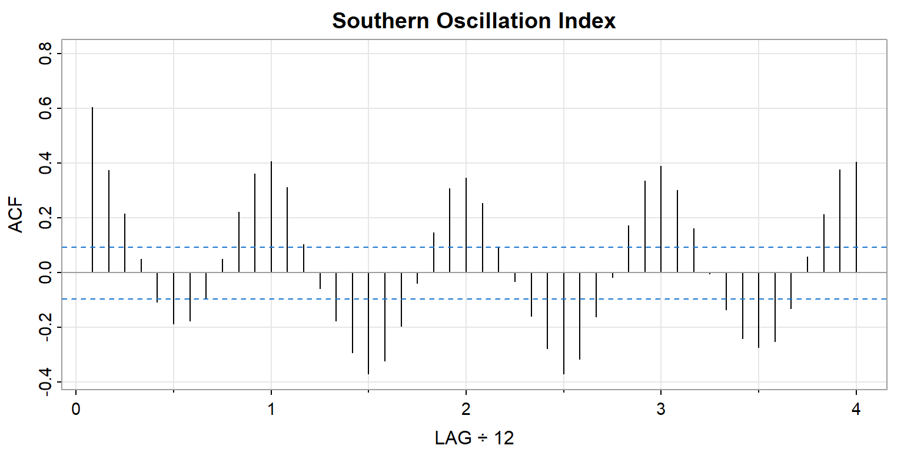Figure 12: Sample ACF for SOI data
- Blue dashed lines: 95% confidence bounds under white noise null
- Values outside bounds → significant autocorrelation
- Pattern of decay/oscillation suggests model structure
Partial Autocorrelation Function (PACF)
The PACF measures correlation between \(X(t+u)\) and \(X(t)\) after removing the linear effect of intervening values.
\[\phi_{uu} = \text{Corr}(X(t+u) - \hat{X}(t+u), \; X(t) - \hat{X}(t))\]
The PACF answers: What is the direct effect of lag \(u\), controlling for shorter lags?
ACF and PACF Together

Figure 13: ACF and PACF for SOI data
- ACF: Total correlation at each lag
- PACF: Direct effect at each lag, controlling for others
- Together they suggest model structure (Chapter 13)
Why Correct Inference Requires Understanding
The Variance Problem
Suppose we estimate the mean \(\mu_X\) from \(T\) observations.
If independent: \[\text{Var}(\bar{X}) = \frac{\sigma_X^2}{T}\]
If autocorrelated: \[\text{Var}(\bar{X}) = \frac{\sigma_X^2}{T} \left(1 + 2\sum_{u=1}^{T-1}\left(1 - \frac{u}{T}\right)\rho_X(u)\right)\]
Ignoring autocorrelation gives wrong standard errors.
This is a failure of understanding producing a failure of inference.
Effective Sample Size
Question: How many independent observations would give the same variance?
\[N_{\text{eff}} = \frac{T}{\displaystyle 1 + 2\sum_{u=1}^{T-1}\left(1 - \frac{u}{T}\right)\rho_X(u)}\]
Example: If \(\rho_X(1) = 0.8\) and higher lags decay geometrically…
- \(T = 100\) observations
- \(N_{\text{eff}} \approx 11\) effective observations
Your sample is 9× smaller than it appears!
Practical Consequences
| If you ignore autocorrelation… | Consequence |
|---|---|
| Confidence intervals | Too narrow |
| Hypothesis tests | Too many false positives |
| Standard errors | Underestimated |
| Cross-validation | Training/test not independent |
The lesson: Understanding the dependence structure is essential for valid inference.
This is not merely academic—it affects real decisions.
Looking Ahead
Two Chapters, Two Emphases
Chapter 13: Time Domain Methods
- ARIMA models: AR, MA, and their combinations
- Forecasting and prediction intervals
- Emphasis: predicting the future from the past
Chapter 14: Frequency Domain Methods
- Periodogram and spectral density estimation
- Coherence between series
- Emphasis: understanding periodic structure
Both perspectives are needed for complete understanding.
The Dual Aims, Revisited
Time series analysis embodies the dual aims of data analysis:
Decision support: Forecast tomorrow’s value, next quarter’s earnings, next year’s climate
Scientific understanding: What periodic phenomena drive the system? What filtering has occurred? What is the physics?
Effective forecasting rests on understanding; understanding is tested by predictive success.
The two aims are inseparable.
Summary
Key Insights
Time series have memory—the present depends on the past
Two equivalent descriptions: ACF (time domain) and spectrum (frequency domain)
Fourier analysis is fundamental because sinusoids are eigenfunctions of time-shift
Stationarity is the statistical counterpart of time-invariance
Ignoring structure invalidates inference—ESS reveals your true sample size
Understanding and prediction are intertwined—the dual aims made precise
Diagnostic Checklist
When you encounter a new time series:
Plot the series: Look for trend, seasonality, level shifts, changing variance
Check stationarity: Does \(X\) wander? Transform as needed
Examine the ACF: How fast does it decay? Any oscillation?
Examine the spectrum: Any dominant peaks? Low-frequency dominance?
Consider ESS: How much independent information do you really have?
Ask both questions: What predicts the future? What structure is present?
Exercises
Team Exercise 1: Explore an astsa Dataset
Choose a time series from astsa not discussed today (e.g., nyse, oil, prodn):
- Plot the series. What features do you observe?
- Plot the ACF. Is there evidence of autocorrelation?
- Does the series appear stationary? What would you do if not?
Team Exercise 2: Simulate White Noise
Generate 500 observations of Gaussian white noise using rnorm():
- Plot the series, ACF, and spectrum.
- How do they compare to theoretical signatures (flat spectrum, ACF = 0 at all lags)?
- Repeat several times. How much sampling variation do you see?
Team Exercise 3: Effective Sample Size
For an AR(1) process, \(ESS \approx T \cdot (1 - \phi) / (1 + \phi)\).
- Calculate ESS for \(T = 200\) when \(\phi = 0.5\), \(0.8\), \(0.95\).
- What happens as \(\phi \to 1\)?
- You have \(T = 100\) observations with estimated \(\phi = 0.7\). How wide should your confidence interval for the mean be, compared to the naive interval?
Discussion Questions
You fit a regression and the residuals have ACF(1) = 0.4. What are the implications?
When is first differencing appropriate? When might it remove too much signal?
“The spectrum and ACF contain the same information.” True in theory—why might one be more useful in practice?